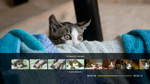
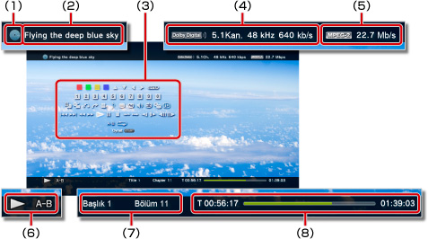

Video > Kontrol panelini kullanma
Kontrol panelini kullanma
Ekrandaki kontrol panelini kullanarak çeşitli işlemler gerçekleştirin. Kontrol paneli  düğmesine basılarak görüntülenebilir veya gizlenebilir.
düğmesine basılarak görüntülenebilir veya gizlenebilir.
Bu sayfada görüntülenen simgeler şu şekilde tanımlanır:
 |
Salt okunur Blu-ray Disc (BD) içine kayıtlı video |
|---|---|
 |
Yeniden yazılabilir BD içine kayıtlı video |
 |
AVCHD formatında kayıtlı video |
 |
|
 |
VR Modunda DVD-R / DVD-RW içine kayıtlı video |
 |
Sistem depolama alanına kaydedilen video dosyaları |
 |
Depolama ortamına kaydedilen video dosyaları* |
| * |
Depolama ortamını bazı modellerle kullanmak için uygun bir USB adaptörü (birlikte verilmez) gerekir. |
|---|
Uyarı
Bazı içerik, içerik geliştiricisi tarafından önceden ayarlanan oynatma koşullarına sahip olabilir. Bu gibi durumlarda, bazı kontrol paneli öğeleri kullanılamayabilir.
Kırmızı / yeşil / mavi / sarı simgeler


Simgeyle ilgili işlemleri gerçekleştirin. Simgeye atanan özellikler içeriğe bağlı olarak değişebilir.
Yukarı / Aşağı / Sol / Sağ

Bir öğe seçin.
Enter
Seçili öğeyi onaylayın.
Sayısal Tuş Takımı

Numaraları girin.
Açılır Menü
Açılır menüyü görüntüleyin.
Menü
Menüyü görüntüleyin.
Üst Menü
Üst menüyü görüntüleyin.
Geri Dön
Videoda belirli bir noktaya dönün.
Sahne Arama


Bu özelliği bazı zaman aralıklarında oluşturulan küçük resimleri görüntülemek için kullanın. Videoyu belirli bir sahneden oynatmaya başlamak için bir küçük resim seçin.

1. |
Küçük resim oluştururken kullanılacak zaman aralığını seçmek için |
|---|
 veya
veya  düğmesini kullanın.
düğmesini kullanın.2. |
İzlemek istediğiniz sahnenin küçük resmini seçmek için |
|---|
 veya
veya  düğmesini kullanın.
düğmesini kullanın.İpuçları
- [Bölüm] seçeneği yalnızca bölüm bilgileri içeren video içeriği için seçilebilir.
- Sahne arama özelliği bir dakika veya daha kısa süren uzunluktaki video içeriği için kullanılamaz.
- Sahne arama özelliği bazı video içeriği türleri için kullanılamaz.
- Bir küçük resim seçtiğinizde, sahnenin bir önizlemesi yaklaşık 15 saniye oynatılır.
Git


Belirtilen bir bölümden veya süreden oynatın.
| Başlık X | Başlık numarasını belirtin. |
|---|---|
| Bölüm X | Bölüm numarasını belirtin. |
| XX:XX / XX:XX:XX | Süreyi belirtin. |
İpucu
Video dosyasına bağlı olarak, (Git) öğesini kullanamayabilirsiniz.
Açı Seçenekleri
Birden fazla açıyla içerik kaydı için kullanılabilir görüntüleme açılarından birini seçin.
Ses Seçenekleri
Birden fazla ses parçası kaydı için kullanılabilir ses seçeneklerinden birini seçin.
Altyazı Seçenekleri
Birden fazla altyazı dili kaydı içeriği için kullanılabilir altyazı seçeneklerinden birini seçin. Altyazılar içerik altyazıları desteklediğinde seçilebilirler.
İpuçları
- Altyazıları görüntülemek için,
 (Ayarlar) >
(Ayarlar) >  (Video Ayarları) > [Altyazılar] öğesine gitmeli ve [Açık] olarak ayarlamalısınız.
(Video Ayarları) > [Altyazılar] öğesine gitmeli ve [Açık] olarak ayarlamalısınız. - Altyazılar ayarı yalnızca Kuzey Amerika'da satılan PS3™ sistemlerinde kullanılabilir.
Altyazı Stili Seçenekleri
Birden fazla altyazı stili kaydı için kullanılabilir görüntüleme seçeneklerinden birini seçin.
Ses Kontrolü
 (Video) altında oynatılan içeriğin ses çıkış düzeyini ayarlayın. Dokuz düzeyden birini seçin.
(Video) altında oynatılan içeriğin ses çıkış düzeyini ayarlayın. Dokuz düzeyden birini seçin.
İpuçları
- Ses çıkış düzeyi çok yükseğe ayarlanırsa ses bozulabilir. Bu durumda, ses çıkış düzeyini alçaltın.
- Bazı ses aygıtları kullanılırken veya bazı ses türleri çıkarılırken bu ayar devre dışı bırakılabilir.
AV Ayarları
(Video) altında oynatılan içeriğin çıkışıyla ilgili ayarları yapın. Görüntülenen öğeler içeriğe bağlı olarak değişebilir.
| Çerçeve Görüntü Gürültüsü Azaltma | İnce gürültüyü azaltmak için ayarlayın. |
|---|---|
| Blok Görüntü Gürültüsü Azaltma | Ekranda görüntülenen mozaik gibi blok gürültüsünü azaltmak için ayarlayın. |
| Sivrisinek Tipi Gürültüyü Azaltma | Görsel görüntülerin kenarlarında görünen sivrisinek gürültüsünü azaltmak için ayarlayın. |
| Yukarı Ölçekleme | Yukarı ölçekleyici çıkış için ayarlayın. Ayarladığınız değer (Ayarlar) > (Video Ayarları) altındaki [BD/DVD - Yukarı Ölçekleyici] öğesinde yansıtılır. |
| Video Çıkış Formatı | Video çıkış formatını ayarlayın. DVD ve BD oynatmak için video çıkış formatını seçin. Ayarladığınız değer (Ayarlar) > (Video Ayarları) altındaki [BD/DVD - Video Çıkış Formatı (HDMI)] öğesinde yansıtılır. |
| Y Pb/Cb Pr/Cr Süper Beyaz | Süper beyaz görüntüleme için ayarlayın. Süper beyaz sinyali artık bir DVD, BD veya AVCHD disk oynatılırken çıkarılabilir. Ayarladığınız değer (Ayarlar) >  (Ekran Ayarları) altındaki [Y Pb/Cb Pr/Cr Süper Beyaz (HDMI)] öğesinde yansıtılır. (Ekran Ayarları) altındaki [Y Pb/Cb Pr/Cr Süper Beyaz (HDMI)] öğesinde yansıtılır. |
| RGB Tam Aralık | RGB tam aralık görüntüleme için ayarlayın. Ayarladığınız değer (Ayarlar) > (Ekran Ayarları) altındaki [RGB Tam Aralık] öğesinde yansıtılır. |
| Dinamik Aralık Kontrolü | Dinamik aralık kontrolünü ayarlayın. Dolby Digital ses üreten BD ve DVD oynatırken PS3™ sisteminizin dinamik aralık kontrolü özelliğini etkinleştirin veya devre dışı bırakın. Ayarladığınız değer (Ayarlar) > (Video Ayarları) altındaki [BD/DVD - Dinamik Aralık Kontrolü] öğesinde yansıtılır. |
| Ses Çıkış Formatı | Ses çıkış formatını ayarlayın. DVD ve BD oynatmak için ses çıkış formatını seçin. Ayarladığınız değer (Ayarlar) > (Video Ayarları) altındaki [BD/DVD - Ses Çıkış Formatı (HDMI)] veya [BD - Ses Çıkış Formatı (Optik Dijital)] öğesinde yansıtılır. |
Saat Seçenekleri
Bir başlık veya bölüm için geçen süre veya kalan süreyi görüntülemek için seçin. Görüntülenen öğeler oynatılmakta olan içeriğe göre değişir.
Ekran Modu
Ekran modunu değiştirin.
| Normal | Videoyu orantısını değiştirmeden ekran boyutuna sığacak şekilde görüntülemek için ayarlayın. |
|---|---|
| Yakınlaştırma | Videoyu orantısını değiştirmeden tam ekran boyutunda görüntülemek için ayarlayın. Videonun üst ve alttaki veya sol ve sağdaki bölümleri kesilir. |
| Tam Ekran | Oranları değiştirerek ve görüntüyü yatay veya dikey uzatarak tüm ekranın içeriğini görüntülemek için ayarlayın. |
| Orijinal | Videoyu orijinal boyutunda görüntülemek için ayarlayın. |
İpucu
Video dosyasına bağlı olarak ekran modunu değiştirmeniz mümkün olmayabilir.
Değiştir Simgesi
Video dosyasıyla ilişkili simgeyi (küçük resim görüntüsü) değiştirin. Video dosyasını oynatma sırasında, simge olarak seçmek istediğiniz görüntü görüntülendiği zaman (Simgeyi Değiştir) öğesini seçin.
İpuçları
- Video dosyasına bağlı olarak simgeyi değiştirmeniz mümkün olmayabilir.
- İki saniyeden kısa bir video dosyası simge olarak kullanılamaz.
Sil
Oynatılmakta olan bir video dosyasını silin.
Görüntüle
Oynatma durumunu ve diğer ilgili bilgileri görüntüleyin. Görüntülenen bilgiler oynatılmakta olan içeriğe göre değişir.

(1) |
Ortam |
|---|---|
(2) |
Başlık |
(3) |
Kontrol paneli |
(4) |
Ses codec'i / kanal numarası / örnekleme hızı / bit hızı |
(5) |
Video codec'i / bit hızı |
(6) |
Durum simgesi |
(7) |
Başlık / bölüm |
(8) |
Geçen süre / toplam süre |
Önceki (Başa Dön) / Sonraki
Önceki veya sonraki bölüme gider.
İpucu
Depolama ortamına veya sistem depolama alanına kaydedilen video dosyaları oynatılırken,  (Sonraki) kullanılamaz. Ayrıca,
(Sonraki) kullanılamaz. Ayrıca,  (Önceki) öğesini seçme oynatmanın video dosyasının başlangıcından oynatılmasına neden olur.
(Önceki) öğesini seçme oynatmanın video dosyasının başlangıcından oynatılmasına neden olur.
Hızlı Geri / Hızlı İleri
Oynatılmakta olan içeriği hızlı geri veya hızlı ileri alır.  düğmesine her bastığınızda, oynatma hızı değişir.
düğmesine her bastığınızda, oynatma hızı değişir.
İpucu
Video içeriği oynatma sırasında hızlı geri veya hızlı ileri işlemleri gerçekleştirmek için kablosuz kontrol cihazının sağ çubuğunu kullanabilirsiniz. Hızlı kontrol etmek için sağ çubuğu kullanın. Blu-ray 3D™ içeriği oynatılırken oynatma hızını kontrol etmek için sağ çubuğu kullanamazsınız.
Oynat
İçeriği oynatmaya başlayın.
İpucu
Çoğu durumda, oynatma sırasında durdurulan video içeriğini bir sonraki oynatışınızda oynatma önceki durdurma noktasından devam eder.
Baştan oynatmak için, oynatmayı durdurmak ve XMB™ menüsünü görüntülemek için PS düğmesine basın. Simgeyi seçin, düğmesine basın ve sonra seçenekler menüsünden [En Baştan Oynat] öğesini seçin.
Duraklat
Geçici olarak oynatmayı duraklatın.
Durdur
Oynatmayı durdurun.
Enstantane Tekrarla / Enstantane Atla
Video'da 15 saniye geri veya 15 saniye ileri bir konuma gidin.
Yavaş (Geri) / Yavaş (İleri)
Yavaş modda oynatın.
Kare Geri / Kare İleri
Bir kerede bir kare oynatın.
A-B Tekrarla
İçeriğin belirtilen kısmını tekrar tekrar oynatın.
1. |
Tekrarlanacak bölümün başında, |
|---|---|
2. |
Tekrarlanacak bölümün sonunda, |
İpucu
A-B Tekrar işlevini temizlemek için, (A-B Tekrarla) öğesini seçin.
Tekrarla
İçeriği tekrar tekrar oynatır.
İpucu
Tekrar işlevini temizlemek için, [Tekrar Kapalı] görüntülenene kadar (Tekrarla) öğesini seçin.